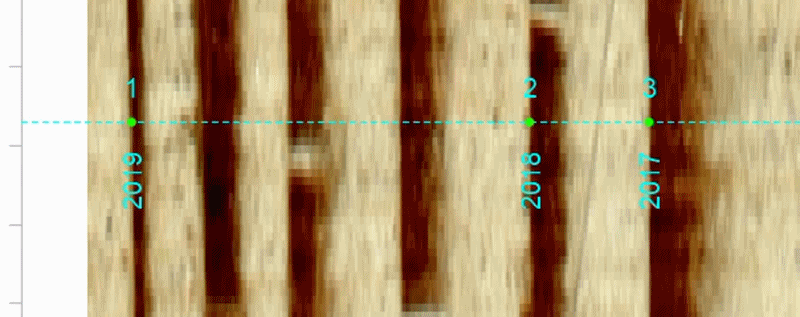
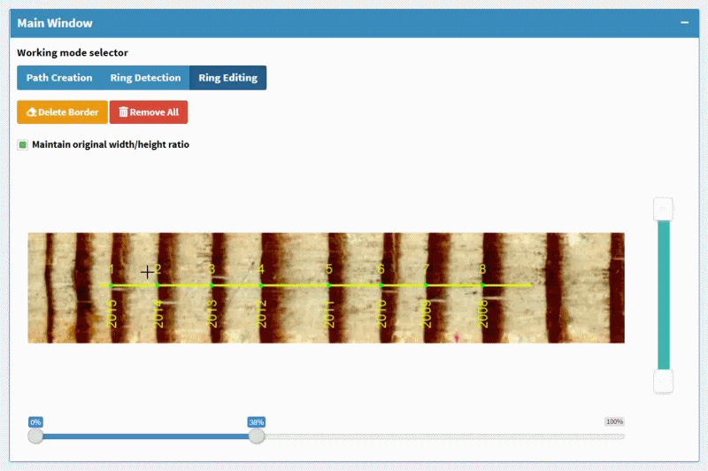

A Simple Workflow for Shiny App
Jingning Shi
2019-09-01
Source:vignettes/app-MtreeRing.Rmd
app-MtreeRing.RmdThe following command could run a Shiny-based application within the system’s default web browser. The app provides a beginner-friendly graphical interface and supports more flexible mouse-based interactions.
MtreeRing::ring_app_launch()1. Image upload
Once you launch the app, you can upload tree ring images from local hard disk. A sample image, named 001.png, with the resolution of 1200 dpi can be found in the library directory where you install the package. It can also be downloaded at https://github.com/ropensci/MtreeRing/raw/master/inst/001.png. In the following sections, this image is used to demonstrate a ring-width measurement.
{kind=link}
You can upload an image with the following steps:
When you start the app, click on the Image Loading button in the sidebar (It defaults to this page).
Click on the Browse… button in the Image Upload window.
Choose an image from hard disk.
Click on the Load button.
-
Rotate and crop the image (Optional).
Note that the bark side should be placed on the left side of the graphical window. When cores are scanned side by side, crop the image to remove unwanted cores. Irrelevant or redundant features (e.g., wooden mounts where cores are glued) should be removed as well. The subsequent analysis will be performed within the cropped area.
MtreeRingapp allows for file sizes up to 150 MB. Although this app supports image cropping, the use of extremely large image files (exceeding 10 MB) is not recommended. Because such a file will consume unnecessary memory space, and the subsequent image rendering and ring detection will also spend too much time.A recommended dpi value is in the range of 800 to 2540 (1200 to 2540 for dendrochronology), as a compromise between the measurement accuracy and computer performance.
2. Path creation
After image uploading, you can click on the Measurement button in the sidebar, and it switches content in the main body. The new page has a graphics window named Main Window. This graphics window constitutes the core of MtreeRing. It enables the display of path, detected tree rings, and different types of user-defined markers.
A path creation consists of the following steps:
-
Enter valid path information, including Series ID, DPI and Sampling year.
The series ID is a string with a maximum length of 6 characters. For example, it can be “ZYX011” which indicates the site “ZYX”, tree 01 and core 1. For more details on how to name a ring-width series, see read.ids in the reference manual of R package dplR.
-
Choose the desired path mode.
Paths are made of one or more line segments and can have any desired direction. A path is usually placed at the center of the core sample and is adjustable both in width and color. Tree rings are identified along the path.
MtreeRingapp provides three path modes:
-
A. Single Segment
This is the default path mode. If the box Horizontal path is checked (default), a path is placed along the horizontal direction of the graphics window. To create a path in any direction, uncheck the box Horizontal path. See this example:
-
B. Single Segment with width correction
When Horizontal path is checked, you can check the box Inclined tree rings. In that case, two parallel paths will be created and you can mark two ring borders on the same ring.
The line segment connecting two dots on the same ring should match the tangent of a tree ring border. Corrected ring widths are estimated from the distance between adjacent rings and orientation of ring borders.

-
C. Multi Segments
A multi-segment path is made of two or more connected line segments (up to 10). When creating paths, their orientation can change from one segment to another at their junction, and should match the direction of wood growth.
-
Create path(s) with mouse clicks
Once you have chosen the desired path mode, move the mouse to Working mode selector in the top left corner of the Main Window and click the Path Creation button.
-
For a single-segment path, move the mouse to the bark side and double click the left mouse button once to add a beginning point of the path.
MtreeRingapp will display this point. Then, move the mouse right and double click once to add an ending point of the path. See this example:
If you create a horizontal single-segment path, the ending point you click will be moved automatically so that it has the same y-coordinate as the beginning point.
For a multi-segment path, the ending point of the previous segment is used as the beginning point of the next segment. Just repeat the previous step.
When you have added all endpoints, a pop-up window appears stating the path creation has been completed successfully.
-
Introduction to path creation options:
Remove Last: Remove the last endpoint added.
Remove All: Remove all endpoints of the path. If you click on this button, you need to re-create a new path.
Show the preview path: When you move the mouse over the image, a preview path is drawn with dotted lines. It may help you create a path which follows the growth direction.
3. Ring detection
If ring borders are clearly visible, follow the steps below to detect tree rings:
Click on the Ring Detection button next to the Path Creation button.
-
Set detection parameters.
Automatic detection parameters can be set in Detection Options in the top right corner of the app. This box provides a series of input controls for image processing, such as morphological operators and different approaches to edge detection.
If you are not familiar with image processing techniques, use the default settings.
-
Click on the green “Run Detection” button.
The app will detect ring borders along the path. Detected ring borders are tagged with years and border numbers.
4. Edit tree rings
If non-edge pixels are incorrectly detected as ring borders, or the wood sample is not suitable for automatic detection, you may need to mark tree rings manually. To switch to the ring editing mode, click on the Ring Editing button next to the Path Creation button.
4.1 Zoom in/out and scroll an image
Two sliders are located at the bottom and right of the Main Window. They are used to zoom in/out and scroll a tree ring image. A draggable button can be found on both ends of a slider.
To zoom in an image horizontally, click on any of the draggable buttons on Slider 1 and drag it to the desired position. Here we select the right-side button because we want to zoom in the left side of the image. See this example:

To scroll the image, you can drag the slider and then move it to the desired position.

You can perform similar operations with Slider 2. These operations could zoom in/out or scroll an image in the vertical direction.
4.2 Add tree rings
In the ring editing mode, you can add a ring by double clicking on the path.
See this example:

4.3 Remove tree rings
Let’s start by introducing a mouse action. The Shiny-based app provides a mouse event, called brush. You can select certain portions of the image by left-clicking the mouse button and dragging the mouse over the graphics window. This action will create a blue rectangle. Here is an example of brush.

Follow these steps to remove tree rings:
Create a rectangular region on the image by brushing.
-
Click on the yellow Delete Border button at the top left corner of the Main Window.
This operation will delete all ring borders covered by the rectangular region.
See this example:

You can also perform a mass deletion of borders using the input control below the Main Window.
5. File download
When the analysis of a sample is complete, you can generate a preview ring-width series by clicking on the blue Generate Series button at the bottom right corner of the app.
To download a file, click on the RWL tab or CSV tab. You can provide additional headers for the RWL file to record more useful information, such as species, elevation, and site.